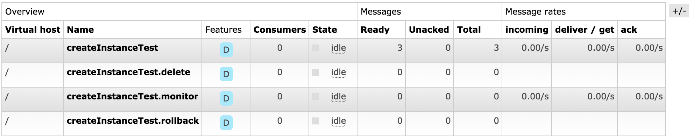

5.1.JavaSDk
JavaSDK依赖Spring3.0以上版本。
[TOC]
maven依赖
<dependency>
<groupId>bsip</groupId>
<artifactId>stone-sdk</artifactId>
<version>siprs1.2-SNAPSHOT</version>
</dependency>
spring配置
<!-- 引用rabbitmq连接-->
<bean id="mqFactory" class="bsip.rabbitmq.factory.MqFactory">
<property name="host" value="mqserver"/>
<property name="port" value="5672"/>
<property name="managerPort" value="15672"/>
<property name="username" value="bsip"/>
<property name="password" value="pass@sip#123"/>
</bean>
<!-- 引用StoneLauncher-->
<bean id="jobLauncher" class="bsip.stone.sdk.launcher.StoneLauncher">
<property name="factory" ref="mqFactory"></property>
<property name="serviceCode" value="test_resource_manager"/>
<property name="serviceName" value="测试资源服务"/>
<property name="serviceDescription" value="this service is for test"/>
<!-- 全局配置业务属性，全局属性配置和局部属性配置只能使用一种，如果配了两种，以全局配置为优先-->
<property name="businessKey" value="regionId"></property>
<property name="businessValue" value="beijin"></property>
<!-- 局部配置业务属性-->
<property name="businessKeys">
<props>
<!-- 对指定的stone配置业务属性-->
<prop key="createVolume">regionId</prop>
</props>
</property>
<property name="businessValues">
<props>
<prop key="createVolume">beijin</prop>
</props>
</property>
<!-- stone线程数量-->
<property name="multyConsumer" value="5"/>
</bean>
开发StoneBean
注解说明
通过注解的方式，配置StoneBean，每一个StoneBean会声明一个Stone。
- Stone : 注解一个Bean为StoneBean。
- code： 编号，也是队列名称，必填
- displayName：显示名称，显示在执行器列表和设计器中
- description：描述信息，说明Stone的功能
- ack：是否在函数运行完成后，应答消息服务（某些场景下，可以异步应答消息服务）
- complete: 是否在函数运行完成后，向引擎发送完成事件
- exchangeType ： 默认为direct，消息的类型，一般不必修改
- routingKey ： 默认为空，一般不必修改
- multy ： Stone对应的消费者数量，也可在Spring中配置，以Spring配置优先
- signle ：如果为true，则无论Spring中是否配置multy，只启动一个线程的消费者
- businessKey：根据业务属性，不同的消费者，处理不同业务的逻辑
- cron : 时间表达式，一旦设置后会在满足条件下，才会执行程序
- StoneParam：用注解的形式，配置Stone的参数
- Name ： 参数标示
- DisplayName ： 参数名称，如果为空，则取参数的name
- Description : 描述信息
- Type ： 参数类型
- Default ： 默认值
- NoEcho ： 是否明文
- AllowedValues ： json数组
- AllowedPattern : 允许的正则表达式
- MaxLength : 最大长度
- Minlength : 最小长度
- Visible : Visible为true的参数，允许设计者在设计器中可见,默认为false
- StoneOutput : 用注解的形式，配置Stone的输出
- Name ： 参数标示
- Description : 描述信息
实现接口
IAsycStone
支持异步操作，以及回滚和删除，一般实现这个接口即可。
public interface IAsycStone {
/**
* 开始工作
* @param var1
*/
void startWork(TaskInfo var1);
/**
* 异步查询工作进度
* @param var1
*/
void asyncWorking(TaskInfo var1);
/**
* 回滚
* @param var1
*/
void rollback(TaskInfo var1);
/**
* 流程删除动作
* @param var1
*/
void delete(TaskInfo var1);
}
ICancelStone
支持取消操作，如流程取消时，不需要响应，则无需实现。
public interface ICancelStone {
/**
* 流程取消动作
* @param var1
*/
void cancel(TaskInfo var1);
}
IMockStone
支持模拟操作，如流程不需要响应模拟事件，则无需实现。模拟事件，可以用在计费计量的预测上。
public interface IMockStone {
/**
* 流程模拟动作
* @param var1
*/
void mock(TaskInfo var1);
}
实现样例
@Stone(code = "createInstanceTest",description = "create an instance")
@StoneParam(Name = "vpcId",Type = "String",Description = "need a vpc where create instance in.", Visible= true)
@StoneParam(Name = "amiId",Type = "String",Description = "need a ami-id where create instance in.",Visible = true)
@StoneParam(Name = "zoneId",Type = "String",Description = "need a ami-id where create instance in.",Visible = true)
@StoneOutput(Name = "instanceId",Description = "the instance'id ")
public class AsycInstanceCreater extends BaseService implements IAsycStone ,ICancelStone,IMockStone {
@Override
public void startWork(TaskInfo taskInfo) {
System.out.println(taskInfo.getString("vpcId"));
taskInfo.addOutput("regionId", taskInfo.getNamespace()+"ceshi");
}
@Override
public void asyncWorking(TaskInfo taskInfo) {
taskInfo.addOutput("value", ImmutableMap.of("instance" ,taskInfo.getNamespace()+"__instance"));
taskInfo.addOutput("regionId", taskInfo.getNamespace()+"ceshi");
taskInfo.addOutput("instanceId", taskInfo.getNamespace()+"ceshi");
}
@Override
public void rollback(TaskInfo taskInfo) {
System.out.println("rollback for instance:"+taskInfo.get("value"));
System.out.println("rollback instance successed!!!");
}
/**
* 流程删除动作
* @param var1
*/
@Override
public void delete(TaskInfo var1) {
}
/**
* 流程取消动作
* @param var1
*/
@Override
public void cancel(TaskInfo var1) {
}
/**
* 流程模拟动作
* @param var1
*/
@Override
public void mock(TaskInfo var1) {
}
}
函数的入参为taskInfo，可以从中获取到相关信息。
taskInfo.getString("vpcId"); // 获取参数
taskInfo.getInt("size");
taskInfo.getProcessInstanceId(); // 获取processInstanceId
taskInfo.getNamespace(); // 获取作用域信息
函数的输出：
taskInfo.addOutput("regionId", taskInfo.getNamespace()+"ceshi");
函数的完成：
taskInfo.failed("running failed"); // 默认为成功，否则，须设置为失败
消息队列
队列的名称为business_key.code.method，例如beijin.createInstance.cancel，代表着执行business_key为beijin的createInstance的cancel方法。
createInstance.monitor，代表着执行createInstance的asyncWorking方法。
createInstance表示运行start方法，method为start的时候，不会加method后缀。
